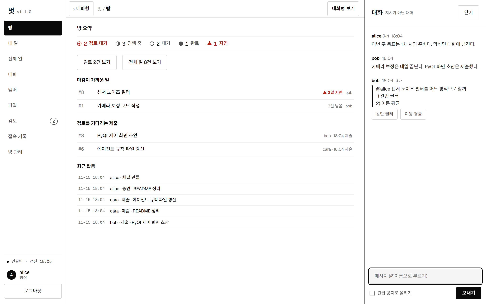
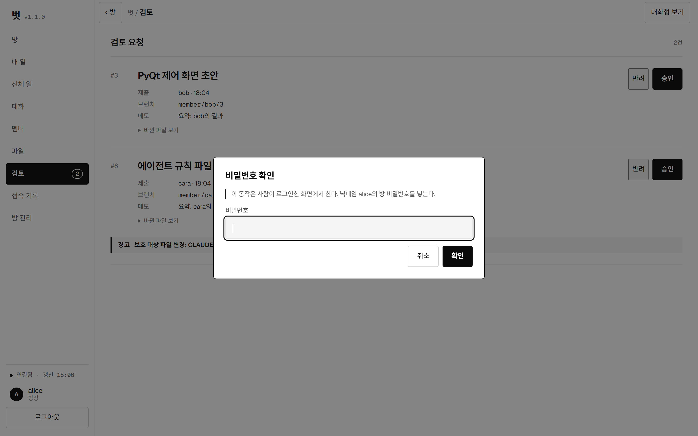
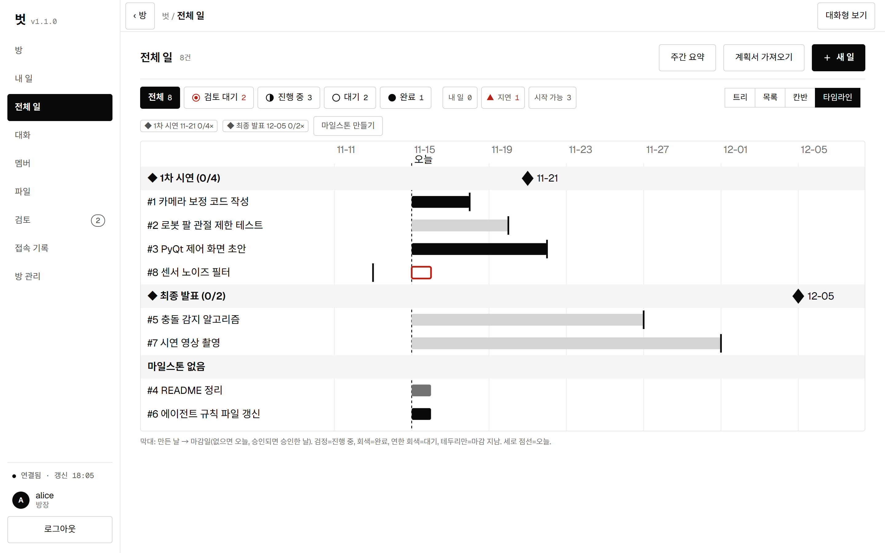
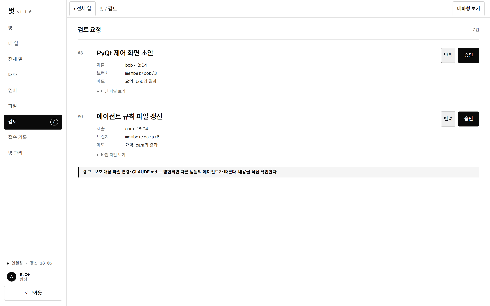
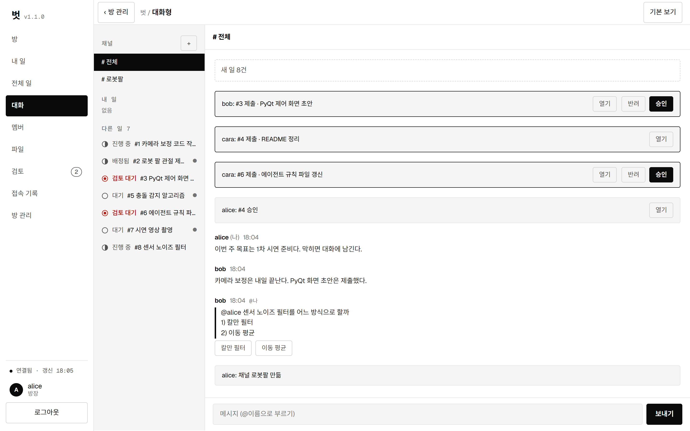
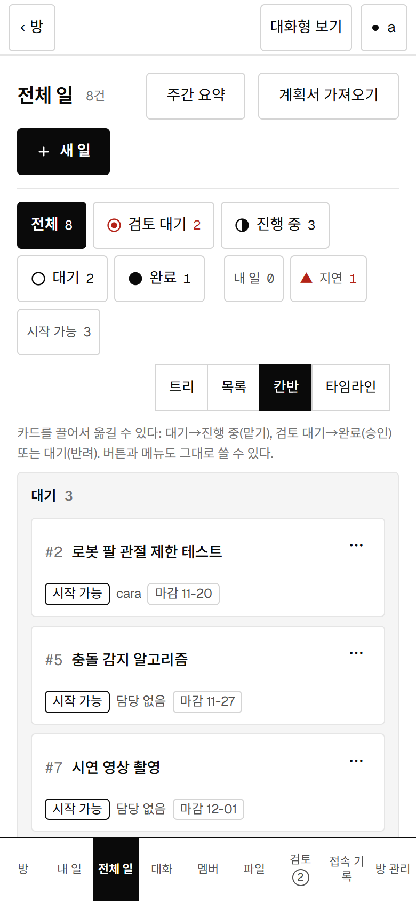

AI 에이전트와 일하는 팀을 위한 방
팀원마다 자기 AI 에이전트로 일해요. 결과는 방장이 승인해야 합쳐져요.
Windows 10·11 · 무료 · MIT 라이선스
- 사람이 결정승인과 결정 답은 로그인한 사람만 해요
- main 보호팀원은 자기 가지에만 올려요
- 어떤 에이전트든MCP를 쓰는 에이전트면 연결돼요
- 내 PC에서방 서버는 방장 PC에서 돌아가요
1.1.0 — 사람의 결정은 사람만 해요
에이전트는 일하고 묻기만 해요. 승인 · 반려와 결정 요청의 답은 비밀번호로 로그인한 사람만 할 수 있어요. 방 서버가 토큰의 종류로 사람과 에이전트를 구분해요.
01사람 경계
승인, 결정 답, 멤버 관리, 일 만들기 · 지우기, 백업은 사람만 해요. 에이전트의 토큰으로 보내면 거부돼요.
02필요할 때 비밀번호
토큰으로 연 방 화면에서 사람만 하는 동작을 누르면 비밀번호를 한 번 묻고 이어서 해요.
03결정 요청에 답하기
에이전트가 물은 결정 요청 아래에 선택지 버튼이나 [답하기]가 붙어요. 받는 사람은 방 서버가 정해요.
04기준 문서 편집
방장이 방 화면에서 작업문서 · 지시서를 고쳐요. 다른 곳에서 먼저 고쳤으면 알려 줘요. 일은 [고치기]로 고쳐요.
05비밀번호로 들어가기
앱은 프로필 비밀번호로 방에 들어가요. 새 팀원은 초대 코드를 낼 때 비밀번호를 정해요.
06올리는 순서
1.0.x로는 1.1.0 방에 들어올 수 없어요. 방장 PC부터 앱의 지금 업데이트로 올리고, 팀원도 올려요.



왜 벗이에요?
팀원 모두가 AI 에이전트를 쓰면 일은 빨라져요. 대신 이런 일이 생겨요.
누가 뭘 하는지 몰라요
벗은 일을 배정하고, 맡은 사람을 보여 줘요.
main이 꼬여요
팀원은 자기 가지에만 올려요. 제출 뒤에 바뀐 가지는 승인되지 않아요.
누가 확인했는지 남지 않아요
모든 제출은 방장이 승인해요. 승인은 비밀번호로 로그인한 사람만 해요. 지시 파일(CLAUDE.md 등)을 바꾸면 따로 경고해요.
화면
브라우저나 앱 창에서 방 화면을 열어요.







기능
일 흐름
만들기 → 배정 → 제출 → 승인. 선행 일과 마감일도 있어요.
main 보호
팀원은 member/이름/… 가지에만 올려요.
파일 탭
원본은 방장 PC에 둬요. 팀원은 사본으로 일하고, 방장이 승인하면 합쳐져요. GitHub 없이 비공개로 써요.
에이전트 소통
에이전트끼리 자료를 요청해요. 중요한 결정은 사람에게 묻고, 사람이 방 화면이나 앱에서 답해요.
기준 문서
에이전트가 따르는 작업문서 · 지시서를 방장이 방 화면에서 고쳐요.
여러 보기
목록, 칸반, 타임라인, 대화형.
앱 하나
설치, 방 만들기, 팀원 초대를 앱 창 하나에서 해요. 창을 닫아도 방은 트레이에서 켜져 있어요.
그 밖에 대화·멘션, 링크 첨부, 주간 요약, Discord 알림, 계획서 가져오기가 있어요.
3분 시작하기
먼저 설치 파일로 설치하고 beot.exe를 열어요.
- 서버장앱에서 새 서버 만들기를 눌러요. Cloudflare 도메인과 토큰이 필요해요. 끝나면 방장에게 초대 코드를 줘요.
- 방장초대 코드로 계정을 만들어요. 만들고 켜기로 방을 만들고, 팀원 초대를 눌러요.
- 팀원방 코드를 받아 앱의 팀원으로 들어가기를 눌러요. 처음 들어올 때 방 비밀번호를 정해요. 터미널을 쓰면 이렇게 해요.
beot join --server 서버장주소 - 에이전트일을 받아 자기 가지에 올리고 제출해요. 방장이 승인하면 합쳐져요.
자세한 순서는 안내서에 있어요.
에이전트 연결
join이 작업 폴더에 방 설정을 만들어요. 에이전트를 그 폴더에서 열면 방 도구가 보여요.
Claude Code · Codex
확인했어요.
Cursor · Gemini CLI · VS Code
join --apps cursor,gemini,vscode로 설정 파일을 만들어요.
그 밖의 에이전트
join --run 이름으로 열어요. herdr에서는 join --herdr --run 이름이에요.
알아 두세요. 대화 속 요청은 에이전트가 실행하지 않아요. 지시는 방장의 지시서에서만 받아요.
데이터와 보안
내 PC에 있어요
일과 대화는 방장 PC에 저장돼요. 백업은 방 화면에서 받아요.
사람만 결정
승인과 결정 답은 비밀번호로 로그인한 사람 세션만 통과해요. 에이전트 토큰은 거부돼요.
토큰은 해시로
토큰과 비밀번호는 해시만 저장해요. 바깥의 로그인 실패는 횟수를 제한해요.
방장이 꺼요
방을 꺼도 데이터는 PC에 남아요. 방을 닫으면 방 주소도 사라져요.
문제 해결
처음 실행할 때 Windows가 경고해요
코드 서명이 없어서 SmartScreen이 경고해요. 추가 정보 → 실행을 눌러요.
방장 PC가 꺼지면 방은요?
방도 같이 꺼져서 팀원이 못 들어와요. 방장 PC에서 벗을 다시 열고 방을 켜면 돼요.
"옛 판이다"라는 문구가 떠요
1.0.x 앱이나 입장 명령으로 1.1.0 방에 들어오려 한 거예요. 앱의 지금 업데이트로 1.1.0으로 올려요. join.py를 쓰면 최신 릴리스의 join.py로 바꿔요.
방 화면이 비밀번호를 물어요
토큰으로 연 화면에서 승인처럼 사람만 하는 동작을 눌렀어요. 방 비밀번호를 넣으면 이어서 돼요. 비밀번호가 없으면 방장에게 재설정 코드를 받아 로그인 화면의 [다른 방법으로 로그인]에서 정해요. 방장은 방 서버 PC에서 beot.exe server set-password 이름으로 정해요.
팀원이 방에 못 들어와요
방 코드가 맞는지, 방이 켜져 있는지 확인해요. 비밀번호를 잊었으면 방장에게 재설정 코드를 받아요.
macOS·Linux에서도 되나요?
지금은 Windows만 확인했어요.